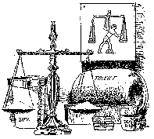

The Good News of the Judgment!!
- The Good News of the Judgment Hour
- The Prayer of Faith in the Judgment Hour
- Blessed Assurance
- Good Works
- Sanctification
- The Perfect Church in the "Last Days"
- The Verdict of Innocent
- The Mark of Cain
- Anti-Christ is Destroyed
- A Bloodless Gospel?
- How Can God Forgive?
- The 144,000
- Darwin and Evolution
- The Cross of Christ
- The Third Use of the Law
- The Moral Influence View of the Atonement
- The Glory of Man
- Babylon is Fallen!!
- Repentance in the Judgment Hour
- The Glory of God
- Social Issues
- Trusting in the Blood
- A "Secret Rapture"
- Salvation through Christ Alone
- The Blood of Christ and the Forgiveness of Sin
- Hollywood and Worldliness
- God Will Justly Punish the Wicked
- "Predestination"
- The Apostle Paul, the Law of God, and the Sabbath Day
- Protestants and Catholics "Unite"??
- The Destruction of the Wicked
- The "Gift of Tongues"
- Pantheism and Satan's Final Deception
- Predestination, Hyper-Calvinism, and "Free Will"
- The Bible and Nothing But the Bible
- The Bible and Nothing But the Bible (full text)
- Lord, We Believe, Help Our Unbelief
- Addictions and Other Sins of the Flesh
- Justification and Sanctification
- The Seal of God
- The Mystery of Iniquity
- Sinless Christians?
- The Lord's Prayer
- The Cause of Our Rejoicing
- Keeping God's Law
- Perfectionism
- The "Image to the Beast"
- Jesus Christ, "LORD God Almighty"
- Righteousness By Faith
- Faith in the Blood
- The Work of the Holy Spirit
- Our High Priest in the Judgment Hour
- God's Mercy
- Always Sinful, Always Justified by Grace
- Tithing???
- Sunday Laws and Holy Days by Samuel Bacchiocchi
- In Christ Jesus, the Hour of God's Judgment has come!!
- The Old and New Covenants
- The Didache— The first Christian catechism. Date: aprox. A.D. 60
- Does Roman Catholicism Teach the True Gospel?
- Should Christians Keep Sunday Holy?
- The Seventh Day Sabbath in the Judgment Hour
- The Age of the Earth
- Evolutionism, Creationism, and the Sabbath
- God's Remedy For Sin
- Was the First Century Christian Church
Hostile to the Sabbath Day? - Errors on the Atonement
- The Gospel of Christ and the "Law" of God
- The Evil of Allegorizing the Genesis Account of Creation
- The Good News About Predestination
- The Sabbath Day and the Gospel
- Emails on Evolution
| Present Truth Magazine Home Page |